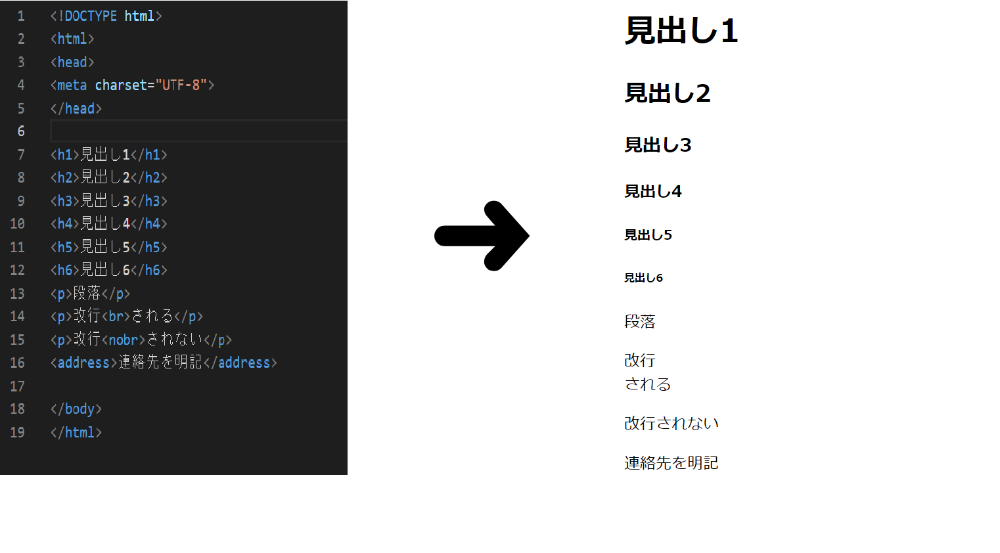
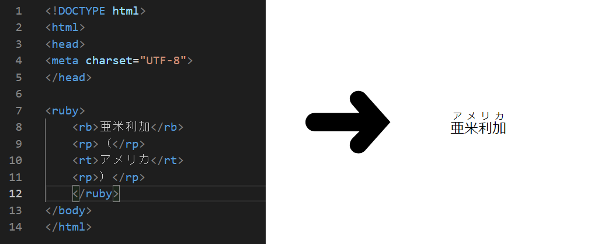
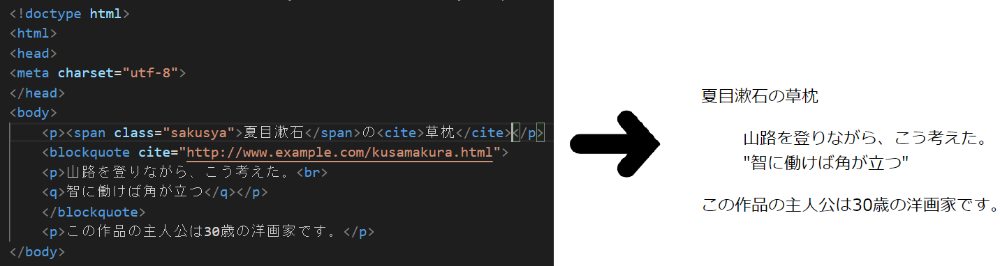
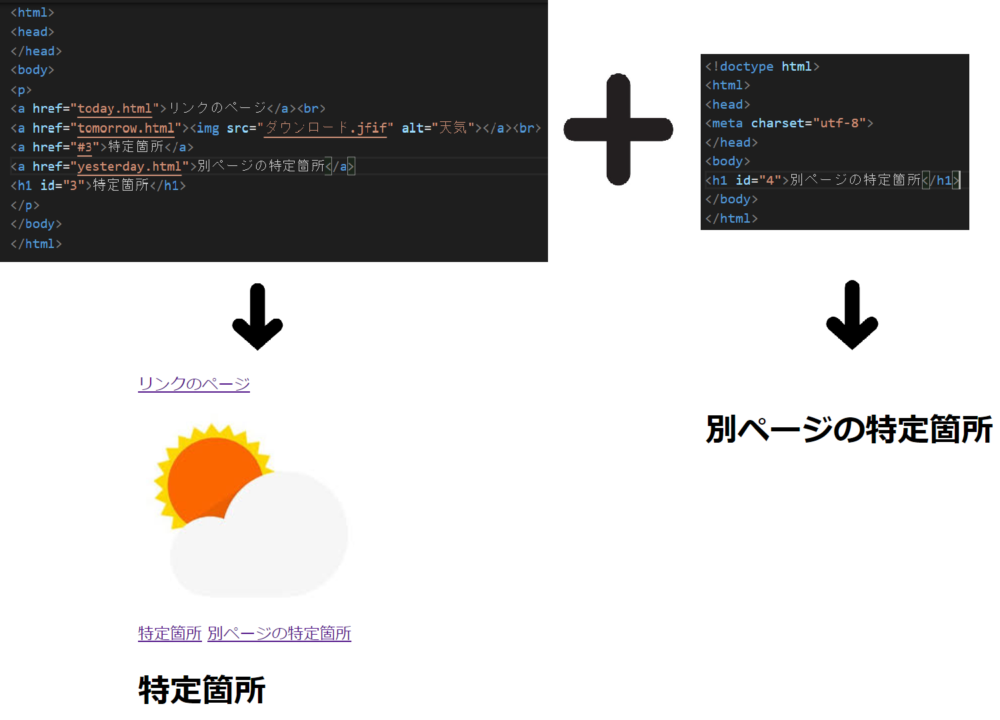
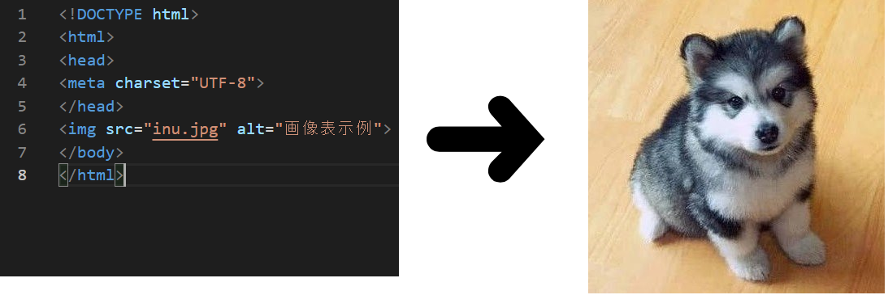
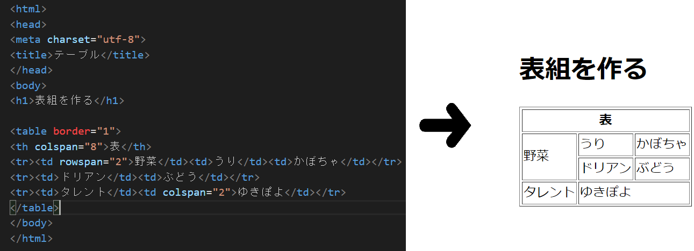
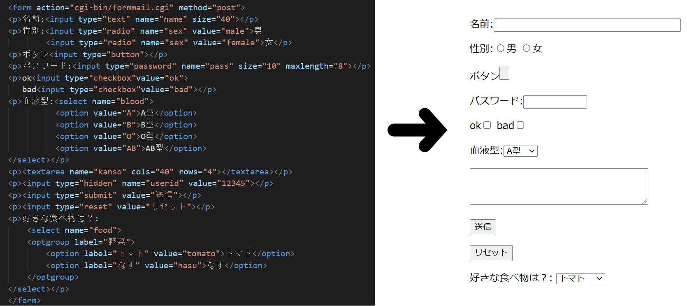
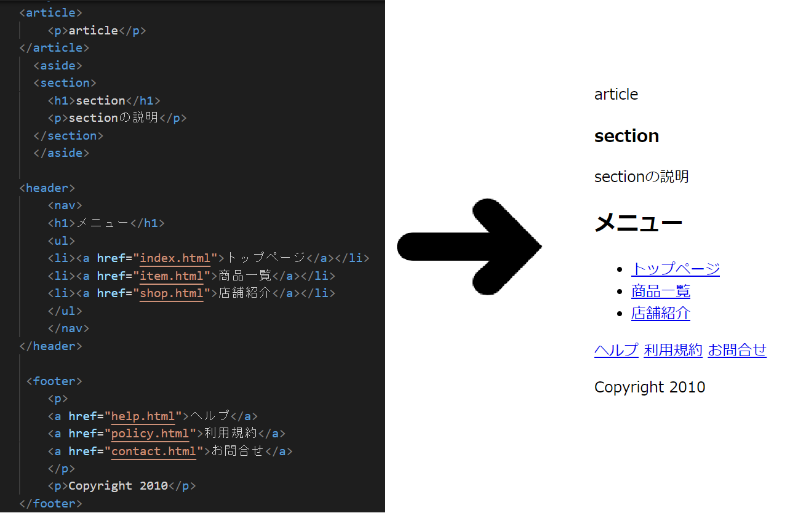

Body要素の中について
この要素の中には以下のタグが入ります
- テキスト、フォントタグ
- リンクタグ
- リストタグ
- イメージタグ
- テーブルタグ
- フォームタグ
- その他
テキスト・フォントタグについて
- 見出し・段落・改行... <h1> 見出し1 <h2> 見出し2 <h3> 見出し3 <h4> 見出し4 <h5> 見出し5 <h6> 見出し6 <p> 段落を示す <br> 改行される <nobr> 改行されない <address> 連絡先が明記される 表示例 
- 文字の装飾 <ruby> ルビの関連部分を示す <rb> 対象のテキスト（ルビベース）を示します。 <rp> ふりがな（ルビテキスト）を示します。 <rt> 未対応ブラウザで表示される内容（記号）。 表示例 
- 引用... <blockquote> 引用文を示す（長文） <q> 引用文を示す（短文） <cite> 引用元を明示する 表示例 
・リンクタグについて
- リンクを設定する <a href"リンク先のurl"> ページへリンクする <a href"リンク先のurl"><img src="画像" alt="任意名"> 画像へリンクする <a href="#任意名">と<～id="任意名"> 同じページの特定部分へリンクする <a href"リンク先のurl#任意名">と<～id="任意名"> 別ページの特定部分へリンクする 表示例 
リストタグについて
- 箇条書きリスト <ul> 順不同のリストの範囲を指定 <li> リストの項目を記述する
- 番号付きリスト <ol> 順序付きのリストの範囲を指定 <li> リストの項目を記述する
- 定義型リスト <dl> 定義型リストの範囲を指定 <dt> 定義する用語を記述する <dd> dtで記述した用語の説明をする
・イメージタグについて
- 画像の表示 <img src ～ alt ～ >imgで画像を表示 srcはリンク。altは表示されなかった時の説明 表示例 
- 表全体の指定... <table> 1つのテーブル全体を囲う <table border = 1> 枠線を作る(基本は1のみ) <tr> テーブルの行を表す <td> その他のセルを表す <th> ヘッダー（見出し）となるセル（1つ1つのマス目）を表す <td(th)rowspan(colspan)> セルを縦(横)に伸ばす 表示例 
・フォームタグについて
- フォーム全体の指定... <form> 入力・送信フォームを作る <label> 部品とラベルを関連付ける
- フォームの部品... <input type="～" name=～ value="～">nameで部品の名前を、valueで表示内容を決める <input type="text"> テキストボックスを作る <input type="password"> パスワード形式の入力欄を作る <input type="radio"> ラジオボタンを作る <input type="checkbox"> チェックボックスを作る <input type="hidden"> 隠しデータを送信する <textarea> 複数行のテキスト入力欄を作る <select><option> セレクトボックスを作る <optgroup> 選択肢をグループ化する
- ボタン... <input type="reset"> リセットボタンを作る <input type="submit"> 送信ボタンを作る <input type="button"> 汎用的なボタンを作る <input type="～" maxlength>入力できる文字数を制限する 表示例 
- その他 <section> 「章・節・項」などであることを示す <article> 独立して完結しているものを示す <aside> メインコンテンツとは関連性が低い補足や広告などを示す <nav> 「主要なナビゲーション」に対してのみ使用する。但し、 ページ内に1回しか使えないという事ではありません。 <div> 他に適当なタグが無い場合に使用し、 要素をグループ化する役割として使用する。 表示例 